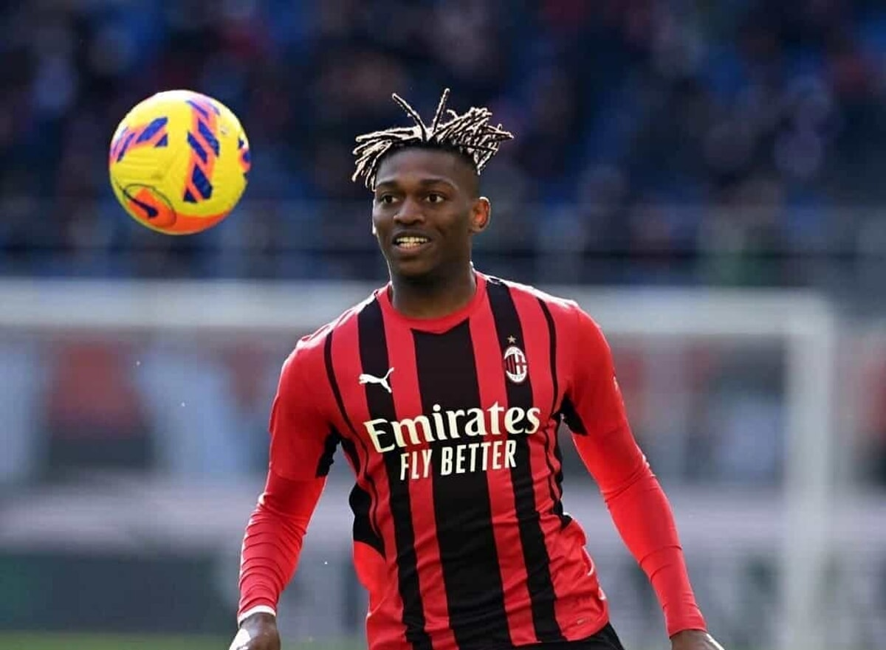

Leao è il giocatore più forte del campionato
Sporting Lisbona
Dopo una breve militanza nel vivaio dell'Amora FC,[5][6] all'età di 9 anni approda nel settore giovanile dello Sporting Lisbona, in cui compie la trafila nelle varie formazioni giovanili. Il 21 maggio 2017 esordisce con lo Sporting Lisbona B, la seconda squadra, subentrando nel secondo tempo e andando in gol nella partita pareggiata per 1-1 in trasferta contro il Braga B;[7] fino al 2018 realizza 7 gol in 12 presenze in Segunda Liga.
Esordisce in prima squadra il 12 ottobre 2017, all'età di 18 anni, nella partita di Coppa di Portogallo vinta per 2-4 contro l'Oleiros, segnando la quarta rete dei Leões. L'11 febbraio 2018 esordisce in Primeira Liga nella vittoria per 2-0 contro la Feirense, subentrando a Bryan Ruiz per gli ultimi 21 minuti di gioco.[8] Il 22 febbraio esordisce in Europa League, nella partita dei sedicesimi di finale contro i kazaki dell'Astana, terminata con un pari (3-3) che elimina lo Sporting dalla competizione. Il 2 marzo realizza il suo primo gol in campionato, che non evita la sconfitta per 2-1 sul campo del Porto, dopo essere subentrato al posto di Seydou Doumbia alla fine del primo tempo;[9] nell'occasione diviene il più giovane marcatore dello Sporting in partite contro il Porto.[10] Al termine della stagione, come molti suoi compagni di squadra, rescinde unilateralmente il contratto a causa della violenta aggressione organizzata da numerosi tifosi al centro sportivo del club a seguito della mancata qualificazione alla UEFA Champions League.[11] Tuttavia, considerando che la rescissione è stata unilaterale, è stato costretto a pagare 16,5 milioni di euro allo Sporting.[12][13]
Lilla
L'8 agosto 2018 si trasferisce al Lilla, in Francia, con cui firma un contratto di cinque anni.[14] Il 30 settembre esordisce in Ligue 1 nella vittoria per 3-0 contro l'Olympique Marsiglia, prendendo il posto di Loïc Rémy. Entrato stabilmente nel gruppo dei convocati, il 27 ottobre realizza contro il Caen la prima rete (alla seconda presenza) nel campionato francese. Tra il 16 dicembre e il 18 gennaio 2019 va a segno in quattro partite di campionato consecutive. Chiude la stagione, conclusa dal Lilla al secondo posto della classifica, con 24 presenze e 8 gol in Ligue 1.
Milan(meglio)
L'affermazione
Nella stagione seguente, il 15 settembre 2021, esordisce in UEFA Champions League venendo schierato come titolare nella partita persa ad Anfield (2-3) contro il Liverpool, partita in cui fornisce un assist per una marcatura rossonera. Il 28 settembre segna anche il suo primo gol nella massima manifestazione europea, quello del provvisorio vantaggio nella partita persa in casa (1-2) contro l'Atlético Madrid.[21] Il 1º maggio 2022, decidendo con una rete la sfida casalinga contro la Fiorentina, raggiunge per la prima volta le dieci marcature in una singola stagione di campionato.[22] Nella successiva giornata di campionato, l'8 maggio, fornendo due assist a Sandro Tonali, è decisivo per la vittoria dei rossoneri in casa dell'Verona (1-3). Il 15 maggio segna la rete dell'1-0 nella partita vinta in casa (2-0) contro l'Atalanta.[23] Il 22 maggio, fornendo tre assist, risulta determinante nella vittoria del Milan per 3-0 sul campo del Sassuolo, successo che consente ai rossoneri di vincere lo scudetto. Al termine della stagione è eletto miglior giocatore della competizione dalla Lega Serie A.[24]
All'inizio della stagione 2022-2023 risulta decisivo con una doppietta nel derby di andata vinto contro l'Inter.[25] Il 10 settembre 2022 rimedia la sua prima espulsione con la maglia del Milan, in occasione della partita esterna poi vinta contro la Sampdoria per 1-2.[26] Il 4 gennaio 2023 segna il primo gol del nuovo anno solare in Serie A, in occasione della trasferta di Salerno vinta per 2-1 dai rossoneri.[27][28]
Nazionale
Ha giocato con tutte le rappresentative nazionali giovanili del Portogallo, esordendo con l'Under-21 il 10 novembre 2017, in occasione della partita di qualificazione al campionato europeo del 2019 pareggiata 1-1 contro la Romania Under-21.[29]
Il 5 ottobre 2021, viene convocato per la prima volta in nazionale maggiore,[30] in sostituzione dell'infortunato Rafa Silva.[31][32] Quattro giorni dopo, debutta con la rappresentativa portoghese, subentrando all'inizio del secondo tempo dell'amichevole contro il Qatar.[33]
Convocato per disputare la fase finale del campionato del mondo 2022,[34] nella partita d'esordio giocata a Doha il 24 novembre contro il Ghana mette a segno il suo primo gol in maglia lusitana, contribuendo alla vittoria finale per 3-2.[35]
di seguito un video yt con le migliori highlights della stagione scorsa:
clicca qui
